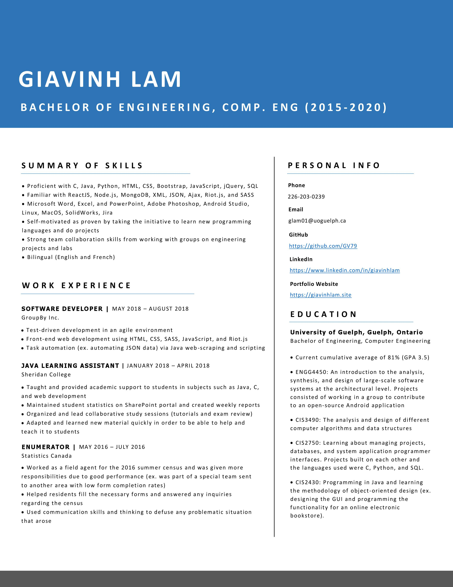

Who Am I?
Hi! My name is Giavinh Lam. I am currently working towards a Bachelor's in Computer Engineering at the University of Guelph. This website was created from scratch using HTML, CSS, and Javascript to show off my portfolio. For more information about my skills, please see my Resume or GitHub.
My program has given me a lot of exposure to both computer hardware and software, and has helped me develop strong technical and thinking skills. In my courses, I have used programming languages such as Java, C, Python, SQL, VHDL, and ARM Assembly to develop some really cool programs. I enjoy programming and learning new things which is why in my free time I often try to tackle new frontend and backend web development languages. It excites me seeing how many different paths you can take in software development and I'm hoping that through personal projects and job experiences, I can find the right place for me.
